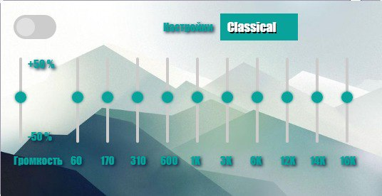

EQ
Расширение для браузера EQ — это мощный инструмент, который позволяет пользователям настраивать звук в браузере с помощью эквалайзера. С помощью EQ вы можете улучшить качество воспроизведения музыки, подкастов и видео, адаптируя звук под свои предпочтения.
Интерфейс приложения:

Инструкция по использованию расширения:
- Включение/Выключение: для того чтобы включить или же выключить эквалайзер нажмите на кнопку в левом вехнем углу меню расширения.
- Выбор пресета: вы можете выбрать нужный вам вариант из предложенного списка, который вы можете открыть нажав на вкладку настроек, находящееся возле указывающей надписи "Настройки".
- Выбор громкости: вы можете, по желанию, установить увеличение или уменьшение громкости для звука из вашего браузера. Для этого вам нужно выбрать желаемый уровень на ползунке громкости в самой левой части интерфейса, над указывающей надписью "Громкость"
- Выбор разных частот: вы можете самостоятельно установить желаемый уровень частот звука, коих вы можете выбрать 10 штук
(60 Гц, 170 Гц, 310 Гц, 600 Гц, 1K Гц, 3K Гц, 6K Гц, 12K Гц, 14K Гц, 16K Гц).
Пошаговая инструкция по установке:
- Скачайте файл. Распакуйте его в удобном месте.
- Откройте Google Chrome.
- Перейдите на страницу управления расширениями. Для этого введите в адресной строке chrome://extensions/ и нажмите Enter.
- Включите режим разработчика. В правом верхнем углу страницы есть переключатель "Режим разработчика". Включите его.
- Нажмите на кнопку "Загрузить распакованное". Выберите папку, в которой находятся файлы вашего расширения.
- Ваше расширение должно появиться в списке. Если все сделано правильно, вы увидите его в списке установленных расширений.